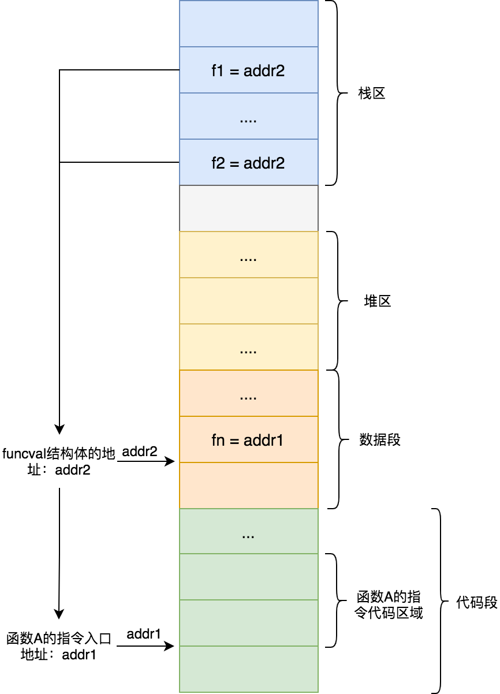
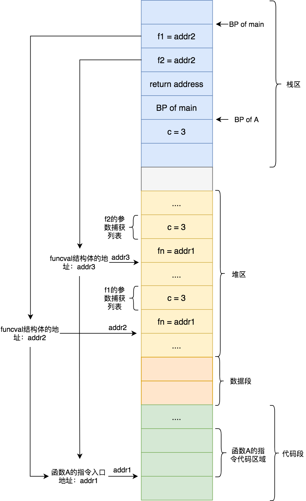

閉包
C語言中函數名稱就是函數的首地址。Go語言中函數名稱跟C語言一樣，函數名指向函數的首地址，即函數的入口地址。從前面《基礎篇-函數-一等公民》那一章節我們知道Go 語言中函數是一等公民，它可以綁定變量，作函數參數，做函數返回值，那麼它底層是怎麼實現的呢？
我們先來瞭解下 Function Value 這個概念。
Function Value
Go 語言中函數是一等公民，函數可以綁定到變量，也可以做參數傳遞以及做函數返回值。Golang把這樣的參數、返回值、變量稱爲Function value。
Go 語言中Function value本質上是一個指針，但是其並不直接指向函數的入口地址，而是指向的runtime.funcval(runtime/runtime2.go)這個結構體。該結構體中的fn字段存儲的是函數的入口地址：
type funcval struct {
fn uintptr
// variable-size, fn-specific data here
}
我們以下面這段代碼爲例來看下Function value是如何使用的:
func A(i int) {
i++
fmt.Println(i)
}
func B() {
f1 := A
f1(1)
}
func C() {
f2 := A
f2(2)
}
上面代碼中，函數A被賦值給變量f1和f2，這種情況下編譯器會做出優化，讓f1和f2共用一個funcval結構體，該結構體是在編譯階段分配到數據段的只讀區域(.rodata)。如下圖所示那樣，f1和f2都指向了該結構體的地址addr2，該結構體的fn字段存儲了函數A的入口地址addr1：

爲什麼f1和f2需要通過了一個二級指針來獲取到真正的函數入口地址，而不是直接將f1，f2指向函數入口地址addr1。關於這個原因就涉及到Golang中閉包設計與實現了。
閉包
閉包(Closure) 通俗點講就是能夠訪問外部函數內部變量的函數。像這樣能被訪問的變量通常被稱爲捕獲變量。
閉包函數指令在編譯階段生成，但因爲每個閉包對象都要保存自己捕獲的變量，所以要等到執行階段才創建對應的閉包對象。我們來看下下面閉包的例子：
package main
func A() func() int {
i := 3
return func() int {
return i
}
}
func main() {
f1 := A()
f2 := A()
print(f1())
pirnt(f2())
}
上面代碼中當執行main函數時，會在其棧幀區間內爲局部變量f1和f2分配棧空間，當執行第一個A函數時候，會在其棧幀空間分配棧空間來存放局部變量i，然後在堆上分配一個funcval結構體（其地址假定addr2)，該結構體的fn字段存儲的是A函數內那個閉包函數的入口地址（其地址假定爲addr1）。A函數除了分配一個funcval結構體外，還會挨着該結構體分配閉包函數的變量捕獲列表，該捕獲列表裏面只有一個變量i。由於捕獲列表的存在，所以說閉包函數是一個有狀態函數。
當A函數執行完畢後，其返回值賦值給f1，此時f1指向的就是地址addr2。同理下來f2指向地址addr3。f1和f2都能通過funcval取到了閉包函數入口地址，但擁有不同的捕獲列表。
當執行f1()時候，Go 語言會將其對應funcval地址存儲到特定寄存器（比如amd64平臺中使用rax寄存器），這樣在閉包函數中就可以通過該寄存器取出funcval地址，然後通過偏移找到每一個捕獲的變量。由此可以看出來Golang中閉包就是有捕獲列表的Function value。
根據上面描述，我們畫出內存佈局圖：

若閉包捕獲的變量會發生改變，編譯器會智能的將該變量逃逸到堆上，這樣外部函數和閉包引用的是同一個變量，此時不再是變量值的拷貝。這也是爲什麼下面代碼總是打印循環的最後面一個值。
package main
func main() {
fns := make([]func(), 0, 5)
for i := 0; i < 5; i++ {
fns = append(fns, func() {
println(i)
})
}
for _, fn := range fns { // 最後輸出5個5，而不是0，1，2，3，4
fn()
}
}
感興趣的可以仿造上圖，畫出上面代碼的內存佈局圖。重點關注閉包函數捕獲的不是值拷貝，而是引用一個堆變量。